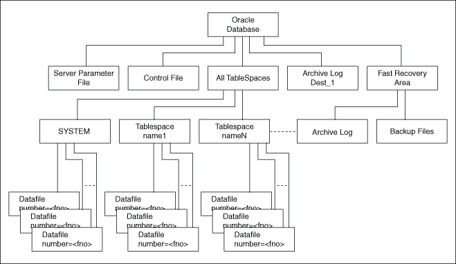

About Backing Up a Database
The technique for backing up a database depends on the archiving mode of the database and whether you are making a component-based or a volume-based backup.
Oracle recommends shadow copies taken in a component mode for backing up the Oracle Database using VSS writer. The Oracle VSS writer defines the components that include the set of database files. The Oracle VSS writer then saves the redo generated during hot backup mode when the snapshot was created in the backup writer metadata document.
The component hierarchy defined by the Oracle VSS writer is illustrated in Oracle VSS Writer Component Hierarchy.
Figure 9-1 Oracle VSS Writer Component Hierarchy
Description of "Figure 9-1 Oracle VSS Writer Component Hierarchy"
- About Component-Based Backups
The components supported by the Oracle VSS writer are listed in Components Backed Up by the Oracle VSS Writer. - About Backing Up a Database in ARCHIVELOG Mode
Learn about backing up a database in ARCHIVELOG mode. - About Backing Up a Database in NOARCHIVELOG Mode
Learn about backing up a database in NOARCHIVELOG mode.
Related Topics
Parent topic: Performing Database Backup and Recovery with VSS
About Component-Based Backups
The components supported by the Oracle VSS writer are listed in Components Backed Up by the Oracle VSS Writer.
The name of the component is the value returned by an OnIdentify VSS message. The Selectable for Backup column indicates whether a component is eligible to be selected in VSS shadow copies.
Table 9-2 Components Backed Up by the Oracle VSS Writer
| Component | Description | Selectable for Backup |
|---|---|---|
|
Oracle Database |
Contains the database files, control files, and server parameter file. |
Yes |
|
Control File |
Contains the snapshot location of the control file for a database running in Note: The files included in the Control File component determine whether current control files or snapshot control files are excluded. For example, if the database is opened in read-only mode, then the snapshot control file location is excluded from the snapshot. |
No |
|
Server Parameter File |
Contains the location of the server parameter file, if the instance is using one. |
No |
|
All TableSpaces |
Includes all tablespaces in a snapshot. |
No |
|
tablespace_names |
Selects individual TableSpaces. |
No |
|
Data file number=n |
Selects individual data files. The metadata contains |
No |
|
ArchiveLogDest_n |
Selects individual local archiving destinations other than the fast recovery area. |
Yes |
|
Fast Recovery Area |
Includes all backup files and archived logs in the Fast Recovery Area in the VSS snapshot. Files backed up by VSS from the Fast Recovery Area can be subjected to deletion under space constraints. |
Yes |
|
Archived Logs |
Logs in Fast Recovery Area |
No |
|
Backup Files |
Backs up from Fast Recovery Area |
No |
You can select only Oracle Database, ArchiveLogDest_n, and Fast Recovery Area, exposed by the Oracle VSS writer during a backup. The availability of the components in Components Backed Up by the Oracle VSS Writer may depend on the database state. For example, if the database is in NOARCHIVELOG mode, then the Archived Logs component is not returned. Likewise, if the instance is not started with a server parameter file, then the Server Parameter File component is not returned.
Note:
The components that are not marked as Selectable for Backup are implicitly included by components marked as Selectable for Backup.
When you select Oracle Database component for backup or restore, all other components are implicitly selected for backup or restore. This implies that all files that are part of the selected component are candidates for backup or restore.
ArchiveLogDest_n and Fast Recovery Area components are defined to contain only log or incremental files. This means that the requester must backup files from these components only when creating a log for incremental or differential backup. Likewise, the requester must restore files from these components only when restoring from log or incremental or differential backups.
The files in all other components other than ArchiveLogDest_n and Fast Recovery Area define database files. This means that the requester must backup files from these components only when creating a full or copy backup. Likewise, the requester must restore files from these components only when restoring from full or copy backup.
Parent topic: About Backing Up a Database
About Backing Up a Database in ARCHIVELOG Mode
Learn about backing up a database in ARCHIVELOG mode.
The procedures assume that the database is open read/write. You can also make closed and consistent backups.
- Making Component-Based Backups of an ARCHIVELOG Database
Explains how to back up the entire database. You can back up onlyOracle Database,ArchiveLogDest_n, andFast Recovery Area, listed in Components Backed Up by the Oracle VSS Writer. - Making Volume-Based Backups of an ARCHIVELOG Database
To make volume-based shadow copies of Oracle database when the database is open in read/write mode, the archived redo logs must be physically located on a separate volume from the volume containing the Oracle data files, control files, server parameter file, and online redo logs.
Related Topics
Parent topic: About Backing Up a Database
Making Component-Based Backups of an ARCHIVELOG Database
Explains how to back up the entire database. You can back up only Oracle Database, ArchiveLogDest_n, and Fast Recovery Area, listed in Components Backed Up by the Oracle VSS Writer.
To back up the entire database:
Parent topic: About Backing Up a Database in ARCHIVELOG Mode
Making Volume-Based Backups of an ARCHIVELOG Database
To make volume-based shadow copies of Oracle database when the database is open in read/write mode, the archived redo logs must be physically located on a separate volume from the volume containing the Oracle data files, control files, server parameter file, and online redo logs.
To back up the database and archived redo logs by volume:
Parent topic: About Backing Up a Database in ARCHIVELOG Mode
About Backing Up a Database in NOARCHIVELOG Mode
Learn about backing up a database in NOARCHIVELOG mode.
For an Oracle database running in NOARCHIVELOG mode, the database must be in a consistent state when you create a VSS snapshot. Backups made while the database is open read/write are not supported.
- Making Component-Based Backups of a NOARCHIVELOG Database
For an Oracle database inNOARCHIVELOGmode, the only supported component-based VSS snapshot is ofOracle Databasewhen the type is full, default, or copy. - Making Volume-Based Backups of a NOARCHIVELOG Database
Learn how to make volume-based backups of a NOARCHIVELOG database.
Parent topic: About Backing Up a Database
Making Component-Based Backups of a NOARCHIVELOG Database
For an Oracle database in NOARCHIVELOG mode, the only supported component-based VSS snapshot is of Oracle Database when the type is full, default, or copy.
To back up the database by component:
Parent topic: About Backing Up a Database in NOARCHIVELOG Mode
Making Volume-Based Backups of a NOARCHIVELOG Database
Learn how to make volume-based backups of a NOARCHIVELOG database.
To back up the database by volume:
Parent topic: About Backing Up a Database in NOARCHIVELOG Mode